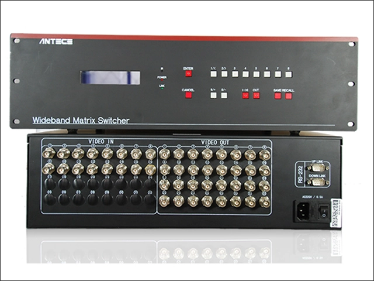
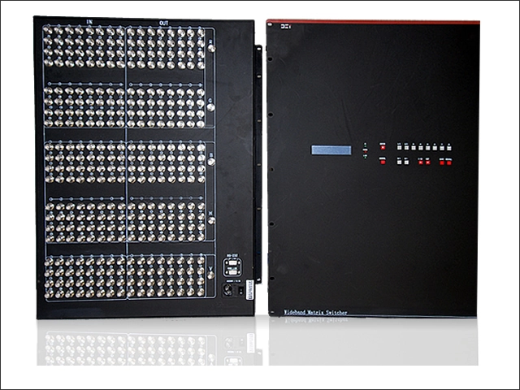
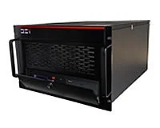
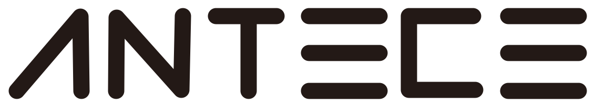

再次获评国家高新技术企业
公司国家高新技术企业资质有效期为 2025 年 12 月至 2028 年 12 月，同时被认定为北京市瞪羚企业。
查看官方名单（公司原名）→北京安科特智能科技有限公司成立于 2008 年 3 月，位于北京市昌平区回龙观镇，主营视频图像处理、多媒体信号通道及控制技术领域产品的研制、开发与生产。
公司设有研发部、技术支持部与生产部，拥有研发中心和专业化生产基地，为公安、军队、交通、医疗、通讯、教育、金融、能源等行业提供可视化信息系统解决方案。
模块化设计，支持前面板按键、RS232/RS485、红外遥控及网络等多种控制方式。


实现任意输入到任意输出的信号切换。安科特提供多种类型的矩阵切换器，从小型机型到数百路接口的大型机箱系统。

ANT-VGA-V 系列多屏电视墙处理器，为指挥中心与监控室的拼接大屏提供图像处理。
将单路视频信号无损分配至多台显示设备。
VGA、DVI 信号光纤传输设备及长线驱动器，满足远距离传输需求。
信号频率转换器、格式转换器及 DVI 数字接口设备。
多屏显卡与 DLP 显示单元，构建完整的拼接显示系统。
从指挥中心到展览展示，安科特设备服务于各类关键显示场景。
公安、军队、铁路、交通、邮电等指挥调度系统。
煤矿、交通、应急救援、消防及森林防火等监控系统。
大屏幕拼接投影墙及融合拼接系统。
博物馆、展厅、汽车展厅、电视演播厅、金融交易场所与多媒体设计。
媒体报道、资质认定与企业历程。
公司国家高新技术企业资质有效期为 2025 年 12 月至 2028 年 12 月，同时被认定为北京市瞪羚企业。
查看官方名单（公司原名）→安保冉介绍了安科特为布达拉宫打造的智能三维运维一体化管控平台，涵盖集中监控、日常巡查、能源与安全管理等功能，并探讨了 LED 会议一体机的市场前景。
在中国日报网阅读 →安保冉接受中国日报网专访，探讨户外 LED 显示屏的市场需求及安科特的相关业务。
在中国日报网阅读 →中国日报网专访安保冉，谈智能显示系统在平安城市与安防领域的应用。
在中国日报网阅读 →
红蓝 ANTECE 标志用于矩阵切换器、LED 显示及视频处理产品，并印在设备前面板上；黑色 ANTECE 标志用于电商业务。
查看交换机与 LED 产品 →告诉我们您的项目需求，我们的技术团队将为您推荐合适的产品与配置方案。